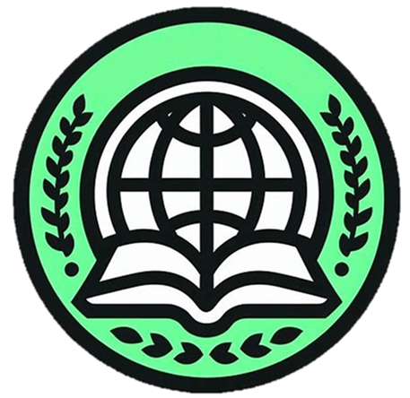

At Cyberskills, you can acquire valuable skills related to the digital world, hence the name. You’ll learn through structured courses that include helpful videos, hands-on exercises to test your understanding, and immersive, well-explained tutorials. Many of these tutorials offer opportunities to customize your results and turn your learning into a personal project. If you want to get a feel for the platform, try out the free courses first.
Cyberskills is designed for a wide range of learners. Whether you’re a computer science student preparing for a test, a freelancer looking to learn programming without a degree, or someone working in a job that’s becoming more digital — this platform is for you.
You’ll be able to explore topics such as programming languages and concepts, databases, cybersecurity, and web development. Cyberskills also offers practical lessons for everyday digital life, including prompt engineering and advanced search techniques — essential for anyone who uses a computer regularly.
I'm a CS student with a deep motivation for digital creativity and self-learning.I created Cyberskills because I believe modern education is broken — especially when it comes to fast-moving tech. Most people aren’t learning how to think, how to use new tools effectively, or how to build real things. I want to fix that.This page will evolve over time, and you're one of the first to see it. Join me on this journey of creating what the system won’t.I’m staying anonymous so the focus stays on the content, not me. But I’m here, actively building this with care, real experience, and a belief that anyone can become future-ready with the right guidance.
Cyberskills courses aren’t just random lessons — they’re connected. You can build your own skill tree by selecting focused course packs. For example, if you’re interested in Object-Oriented Programming, you could take a C++ course along with specialized lessons that expand on that topic. Plus, completing any course — including free ones — unlocks discounts on related courses, encouraging deeper learning at a lower cost.
I'm preparing for the official launch. Be the first to know when it drops.
Join the Waitlist